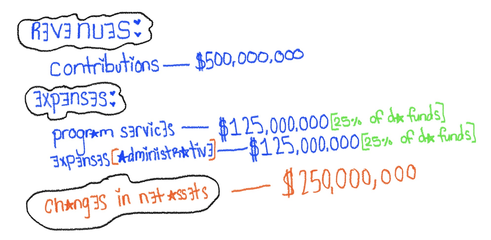
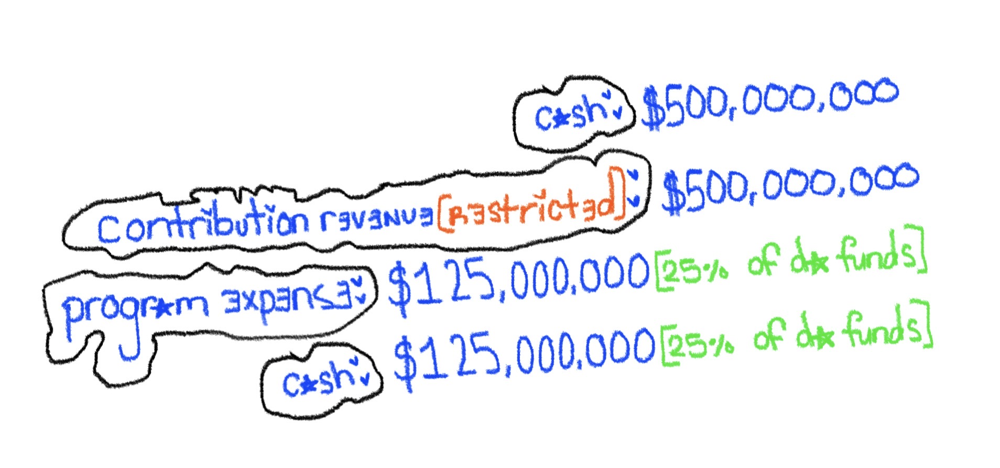
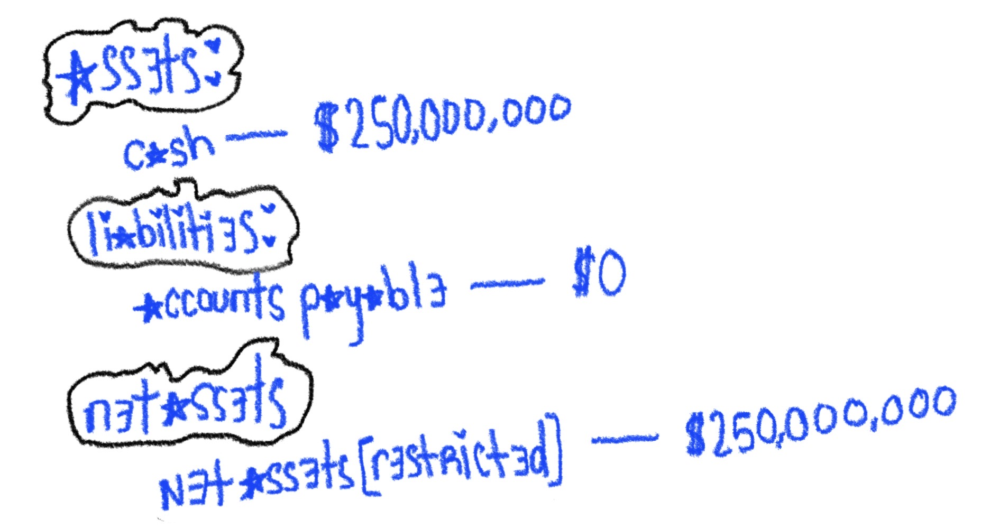

all about da missing benjamins: revisiting haiti’s red cross scandal
in 2010, haiti suffered a devastating earthquake that left many of its people without homes, hope, and even their loved ones. in response, the american red cross launched a massive relief effort, raising a groundbreaking half a billion dollars. but with that much money raised, why the hell does haiti have so little to show for it?
[haiti's hart, atiyah saleemah, 2026]
during the eighteenth century, haiti was considered the wealthiest colony in the americas and, quite frankly, the world. the country produced and supplied half of the globe with coffee, indigo, cotton, and sugar. i can admit to my own ignorance and say that this shocked me because i'm not used to hearing about haiti in this manner. let's be honest, haiti has been represented in the media as a destitute and broken country for so many years. it is often cursed with the image of being dark and resourceless, with nothing but foreign debt, corruption, and underdevelopment.
so the concept of haiti once being the wealthiest colony, then becoming the poorest country in the western hemisphere to date, it's hard to grasp.
this is because it has been indoctrinated in our minds due to false media consumption that haiti is in an incurable state. however, i don’t think it’s fair for me to leave their impoverished circumstances at face value without context, especially since it'll give you some type of answer as to what possibly could have happened with the raised money.
★
exploitation, political instability, and a september 2004 flood played an incredible part in the country's demise; however, on january 12, 2010, there was an earthquake that, for lack of a better term, took the haitian community’s world by storm and caused severe devastation.
this 7.0 earthquake in the country's epicenter of port-au-prince caused the people of the land to not only lose their homes, schools, and businesses but also their lives. according to un news, 220,000 people were reportedly killed during this natural disaster, and about 1.5 million became homeless due to the 35-second-long tremor.
the earthquake undeniably caused more irreparable damage than they could have ever imagined; mentally, physically, economically, and more. these are damages that have yet to be restored to this day.

[the white house, 2010]
worldwide, hearts ached for haiti, with entertainers like wyclef jean standing on the front lines of aid relief for his native land. industry vets like lionel richie and quincy jones curated a 25th anniversary rendition of the classic star-studded tune, “we are the world.” the 80-participant record was released to airwaves on february 1, 2010, to raise money for haiti and its restoration process.
[american red cross enters the chat]
in addition to public support from a pop culture standpoint, there were also formal relief organizations, such as the red cross, that stepped in to extend a hand and help fellow human beings dealing with losses from every angle.
founded in may 1881 by clara barton, the american red cross serves as an organization designed and dedicated to helping people in need, most specifically those who have experienced natural disasters, as well as members of the American armed forces and their families. they have provided over 140 years of compassionate service.
they provide lifesaving aid such as tarps, blankets, water, shelter tools, and relief items alike. they also provide financial contributions and offer disaster specialists who meet the immediate needs of people severely impacted by global emergencies, similar to the haiti earthquake.
"worldwide, hearts ached for haiti."
throughout the decades, the american red cross has provided support in the wake of the global aids epidemic in 1983, relief efforts to victims of hurricane hugo in 1989, and responses to the terrorist attacks on september 11, 2001. So, as haiti underwent its travesty, such an honorable organization intended to do what they’ve successfully done in the past.
the red cross launched its largest single-country response in the organization’s history. the public outpour of support from empathetic communities garnered a groundbreaking total of $32 million in donations via sms. overall, across the world, the total amount of donations reached a rough estimate of $500 million. red cross noted on its official website that, though haiti was one of the most challenging and complex disaster responses ever, it spent 10 years investing in haiti’s medical capacity, water systems, infrastructure, and more.
however, with all of these efforts set in place and seemingly working in favor of haitians, many people would argue that not only has the red cross misappropriated the funds, but that out of the promise of rebuilding haiti’s infrastructure, only 6 permanent homes were built on land after an internal proposal stated it would be 700 homes.
sources like propublica say that, “today, not one home has been built in Campeche, and many of the residents live in shacks made of rusty sheet metal.” there is currently no access to clean drinking water, basic sanitation, or even electricity, and other natural disasters, like storms, create more problems on top of pre-existing ones, such as flooding in the shacks they call home.

[fcc, tent city, 2010]
the american red cross opposes these accusations by saying that they hoped to make the most efficient use of donor dollars, and with such a heavy task on their plate, they quickly learned that adaptability would be key in their efforts as well. they planned to find land to construct permanent housing, but when land was not readily available, they shifted their focus to other housing resources, such as rental subsidies, home repair, and home expansion to increase the country’s rental stock.
it was said that the government of Haiti asked the red cross to continue its focus on its alternative housing project, so they were never able to build the new homes from the ground up like they originally intended. red cross stated that, through these efforts, more than 164,000 people were provided with housing and neighborhood recovery efforts. they were also able to repair schools, roadways, and water distribution points in the neighborhood.
public criticism over the years toward the nonprofit organization has continued to extend the gap between the reported efforts and what the people of Haiti actually received. this has caused many questions to arise in not only haitians' minds, but also for the people across the globe who donated towards the relief efforts. the stark question of what happened with the $500 million raised has been asked a multitude of times, and understandably so.
[money talks, but it's real quiet]
internal concerns were also being raised when a project manager, carline noailles, from washington, d.c., said that the relief process was continuously delayed due to a lack of knowledge from the red cross. another former official who worked on the project also shared that things were being micromanaged from d.c., so it took “four times as long.” the communication between the organization, the people directly affected by the earthquake, and those who have donated has caused quite a controversy. this matter became even more controversial with reports of 25% of the funds being used for internal expenses.
but did it all have to be? not exactly. the misappropriation of funds and the speculation surrounding their usage boils down to simple accounting. proper accounting, if it had been in place, would have cleared up any confusion, past or present. why, might you ask? well, the practice of accounting is the recording and monitoring of financial data and statements. it is a formal way of holding those in charge of allocating money and overseeing financial transactions accountable.
so, in the case of $500 million in donor money presumably going missing, accounting would be able to pinpoint exactly where it has not only gone but what it has been used for, in plain black and white.
[life's a balance sheet]
i tried my best to uncover the official financial statements to gain self-clarity, but i soon discovered that the full report has never been released to the public. this heightens my own curiosity, as summaries have been published detailing what they’ve done to help the people of haiti; yet, a full itemized breakdown of their activities [profiled in this article] cannot be fully backed with evidence and sources, despite them celebrating the successes of their efforts.
the lack of transparency in this context is highly questionable.
this is a situation where the act of restricting funds should have been exercised and strongly enforced. in the industry of not-for-profit accounting, restricted funds are donor contributions that are to be held for one sole purpose. the goal is to make sure money is used primarily for its intended purpose rather than for personal usage or internal expenses. for example, the money shouldn't be used to buy things like a new water cooler for the office or a broken laptop piece. in this case, the donor money was specifically for Haiti and nothing else.

[usgs, susan e. hough, 2010]
a statement of activities should also be organized and brought to the forefront to ensure appropriate and quality handling. as one of the three required statements for not-for-profit organizations, the statement of activities would be able to put to rest the claims of funds being used for internal expenses by showcasing the proper revenues, expenses, gains, losses, and reclassifications. it would also be able to show the change in net assets by way of unrestricted, temporarily restricted, and permanently restricted categories.
for this statement, revenues and expenses should have been formulated as follows:

this statement of activities would reveal that large amounts of money were being spent on program and administrative expenses. however, if only six permanent homes were built, the reported expenses would raise many concerns regarding efficiency, effectiveness, and the actual impact of the expenditures.
this is extremely important in this case because reporting net assets, according to the jitasa group, “allows you to be more transparent with donors and stakeholders about your nonprofit’s financial situation and make informed decisions about how to allocate available funds at your organization.” ultimately, this level of transparency is what the people of Haiti and those on the front lines have been seeking.
in addition to the proposed solutions above, providing journal entries will also showcase a clear and structured recording of the funds. for instance, once the funds were received and expensed, they should have been recorded in a ledger as follows:

these entries demonstrate how the received donor funds would be recorded and how 25% of the funds would be allocated to program expenses related to disaster relief, per the american red cross.
additionally, a statement of financial position would provide an overview of the organization’s assets, liabilities, and net assets [residual equity]. this statement, often called a “balance sheet,” provides a “snapshot” of the financial health of an organization and a summary of its financial status, according to the jitasa group.
for the organization to report its resources and obligations as a means to showcase a simplified statement of financial position, it would look like the following:

this statement of financial position would also reveal that a significant amount of resources remained available. so, if funds were still being held while limited progress was visible, stakeholders would likely question whether those resources were being used appropriately.
[DA reSOURCE] nonprofit net assets: what they are and why they matter
since 2010, the american red cross has launched many efforts to continue its mission in helping people across the globe. the red cross has provided the victims of typhoon haiyan with relief in 2013 [even though we still don't know where that money is either]; they've raised $39.9 million for nepalese families during a 7.8 earthquake in 2015; and in the present day, the organization continues to provide help domestically during hurricane season, when communities are grievously destroyed.

[usaid, 2010]
their work isn’t done in vain, nor do i think there’s ever any ill intent; however, to ensure that situations like this are minimized in the future, there has to be an alignment of transparency between what is hoped for in relief efforts and what will actually happen. accountability doesn’t just have to be in terms of money; it can be in terms of actions and the impact on the victims involved.
greater accountability is necessary for what has happened to the $500 million. this scandal continues to highlight the importance of proper not-for-profit accounting and just how much organizations rely on it. keeping large sums of money transparent and avoiding controversies helps to keep an organization like the red cross on the clear path of its true purpose, which is helping those in dire need.
★ starmoney